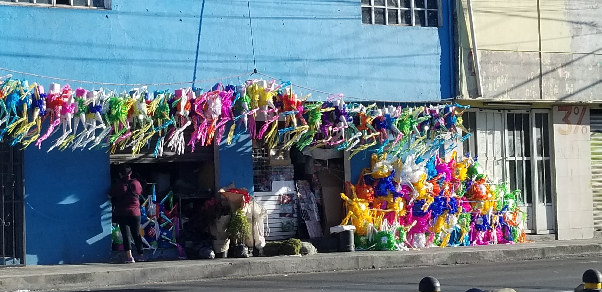

Piñatas
The other day, my friend was driving down the street and sent me the following picture with a comment:

All of this will end up in garbage without recycling and sugar-poisoning our children…
I felt my environmentalist persona was being attacked on various fronts:
- As a past consumer of piñatas, I immediately thought How come I did not think about this topic and possible vulnerability?
- Since I have not consumed piñatas recently, I also felt regret: Why did I not use this for my environmental virtue signaling?
Right away, I recurred to my toolbox of environmental non-action defenses. These tools enable me to fend off any attacks that may shame me or, what could be worse, force me to change my habits. My favorite arguments always work:
- But what about the children? How could you possibly deny a smile on child's face? Besides, a little sugar once in a while cannot hurt!
- Are you being culturally insensitive? These are centuries old traditions that need to be preserved and nurtured!
Uff, that one was a close one! But with a proper use of defenses in our toolbox (soon to be published), you can easily defend yourself.